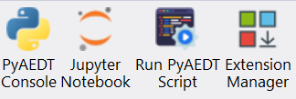

Installation#
PyAEDT consolidates and extends all existing capital around scripting for AEDT, allowing re-use of existing code, sharing of best practices, and collaboration.
This PyAnsys library has been tested on HFSS, Icepak, and Maxwell 3D. It also provides basic support for EDB and Circuit (Nexxim).
Requirements#
In addition to the runtime dependencies listed in the installation information, PyAEDT requires Ansys Electronics Desktop (AEDT) 2022 R1 or later. The AEDT Student Version is also supported.
Install from PyAEDT installer#
The following python script automatically installs PyAEDT from AEDT, using the CPython interpreter included in the AEDT installation.
In order to do that you can:
Download the following file:
PyAEDT Installer Python fileOpen an Electronics Desktop Session and click on Tools->Run Script and execute the file.
Offline install is also possible using wheelhouses.
Note
A wheelhouse is a zip containing all needed packages that can be installed offline. PyAEDT wheelhouse can be found at Releases. After downloading the wheelhouse zip specific for your distribution and Python release, run the script from Electronics Desktop using the zip full path as argument. Please note that AEDT 2023 R1 and lower requires Python 3.7 wheelhouse while AEDT 2023 R2 and higher requires the Python 3.10 wheelhouse.

Starting from 2023R2, buttons are available in the Automation Tab as in the example below.
{kind=link}
Extension manager#
The user can install or uninstall automated workflows using the extension manager. There are three options:
Pre-installed extensions already available in the PyAEDT library.
Open source PyAEDT toolkits described in the PyAEDT Common Toolkit documentation.
Custom PyAEDT extensions.
See Extension Manager for more information.

The user can select the AEDT application to install the specific workflow.
{kind=link}
For additional information about AEDT extensions, see Extensions.
Install on CPython from PyPI#
You can install PyAEDT on CPython from PyPI:
pip install pyaedt
You can also install PyAEDT from Conda-Forge:
conda install -c conda-forge pyaedt
To ensure you have all the necessary dependencies, including optional components, use the following command:
pip install pyaedt[all]
If you are not utilizing gRPC, you can install the required dotnet dependencies separately:
pip install pyaedt[dotnet]
If you want to install the PyAEDT panels in the AEDT Automation tab, use the following command:
pip install pyaedt[installer]
Finally, in the python console, run the following commands:
from ansys.aedt.core.workflows.installer.pyaedt_installer import add_pyaedt_to_aedt
add_pyaedt_to_aedt(“your_aedt_version", r“path_to_personalib")
You can also install the PyAEDT panels using the following steps, this is also useful if you have a centralized PyAEDT installation:
Download the following file:
PyAEDT panel Installer Python fileDefine an environment variable called PYAEDT_INTERPRETER with the path of the python interpreter in which PyAEDT is installed.
Open an Electronics Desktop Session and click on Tools->Run Script and execute the file. You do not need the previous step if
you pass as an argument the path of the python interpreter.
Linux support#
PyAEDT works with CPython 3.8 through 3.12 on Linux in AEDT 2022 R2 and later. However, you must set up the following environment variables:
export ANSYSEM_ROOT222=/path/to/AedtRoot/AnsysEM/v222/Linux64
export LD_LIBRARY_PATH=$ANSYSEM_ROOT222/common/mono/Linux64/lib64:$ANSYSEM_ROOT222/Delcross:$LD_LIBRARY_PATH
Install offline from a wheelhouse#
Using a wheelhouse can be helpful if you work for a company that restricts access to external networks.
Wheelhouses for CPython 3.8, 3.9, 3.10, 3.11, and 3.12 are available in the releases for both Windows and Linux. From the Releases page in the PyAEDT repository, you can find the wheelhouses for a particular release in its assets and download the wheelhouse specific to your setup.
There are two kind of wheelhouses: all and installer.
The all wheelhouse contains all PyAEDT dependencies. And the installer one includes ipython and jupyter lab.
You can then install PyAEDT and all of its dependencies from one single entry point that can be shared internally, which eases the security review of the PyAEDT package content.
For example, on Windows with Python 3.10, install PyAEDT and all its dependencies from a wheelhouse with code like this:
pip install --no-cache-dir --no-index --find-links=file:///<path_to_wheelhouse>/PyAEDT-v<release_version>-wheelhouse-Windows-3.10 pyaedt[all]
If you want to add the PyAEDT panels in the AEDT Automation tab, you need first to install the installer dependencies:
pip install --no-cache-dir --no-index --find-links=file:///<path_to_wheelhouse>/PyAEDT-v<release_version>-wheelhouse-Windows-3.10 pyaedt[installer]
Finally, in the python console, run the following commands:
from ansys.aedt.core.workflows.installer.pyaedt_installer import add_pyaedt_to_aedt
add_pyaedt_to_aedt(“your_aedt_version", r“path_to_personalib")
Install PyAEDT in Conda virtual environment#
Create virtual environment
conda create --name pyaedt_py310 python=3.10
Activate virtual environment
conda activate pyaedt_py310
You can also install PyAEDT from Conda-Forge with this command:
conda install -c conda-forge pyaedt
Upgrade PyAEDT to the latest version#
pip install -U pyaedt